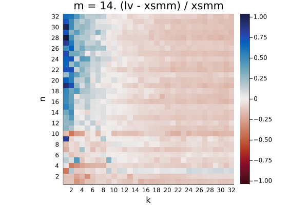
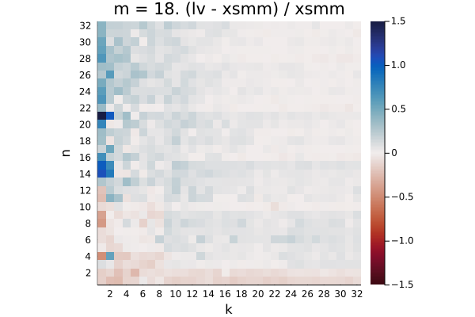
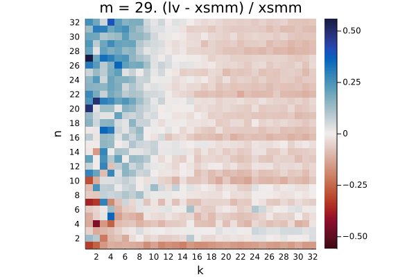

haswell
The plots show the relative difference in runtime (LoopVectorization.jl - libxsmm) / libxsmm for every (m, n, k) triplet. Negative / red values are better for LoopVectorization.jl, positive / blue values are better for libxsmm.

Q₁ = -0.282. Q₂ = -0.140. Q₃ = 0.866

Q₁ = -0.226. Q₂ = 0.148. Q₃ = 1.014

Q₁ = -0.442. Q₂ = -0.356. Q₃ = 0.012

Q₁ = -0.224. Q₂ = -0.139. Q₃ = -0.074
Q₁ = -0.035. Q₂ = 0.209. Q₃ = 0.458

Q₁ = -0.284. Q₂ = -0.061. Q₃ = 0.299

Q₁ = -0.512. Q₂ = -0.462. Q₃ = -0.388

Q₁ = -0.133. Q₂ = -0.072. Q₃ = -0.022

Q₁ = -0.160. Q₂ = -0.104. Q₃ = 0.165

Q₁ = -0.174. Q₂ = -0.145. Q₃ = -0.073

Q₁ = -0.360. Q₂ = -0.333. Q₃ = -0.256

Q₁ = -0.010. Q₂ = 0.031. Q₃ = 0.061
Q₁ = -0.093. Q₂ = -0.050. Q₃ = 0.018

Q₁ = -0.091. Q₂ = -0.048. Q₃ = 0.012

Q₁ = -0.265. Q₂ = -0.234. Q₃ = -0.179

Q₁ = 0.093. Q₂ = 0.150. Q₃ = 0.185
Q₁ = 0.038. Q₂ = 0.075. Q₃ = 0.127

Q₁ = 0.031. Q₂ = 0.069. Q₃ = 0.112
Q₁ = -0.140. Q₂ = -0.104. Q₃ = -0.067

Q₁ = 0.032. Q₂ = 0.074. Q₃ = 0.117
Q₁ = -0.081. Q₂ = -0.045. Q₃ = 0.001

Q₁ = -0.079. Q₂ = -0.039. Q₃ = 0.001

Q₁ = -0.223. Q₂ = -0.187. Q₃ = -0.141

Q₁ = 0.026. Q₂ = 0.073. Q₃ = 0.105

Q₁ = 0.000. Q₂ = 0.036. Q₃ = 0.077

Q₁ = 0.002. Q₂ = 0.035. Q₃ = 0.072

Q₁ = -0.121. Q₂ = -0.094. Q₃ = -0.059
Q₁ = 0.095. Q₂ = 0.162. Q₃ = 0.200

Q₁ = -0.012. Q₂ = 0.024. Q₃ = 0.062

Q₁ = 0.000. Q₂ = 0.035. Q₃ = 0.072

Q₁ = -0.115. Q₂ = -0.086. Q₃ = -0.048

Q₁ = 0.060. Q₂ = 0.116. Q₃ = 0.153